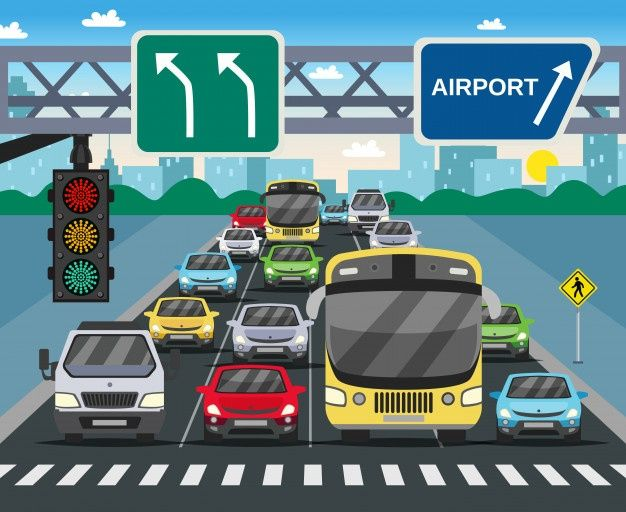
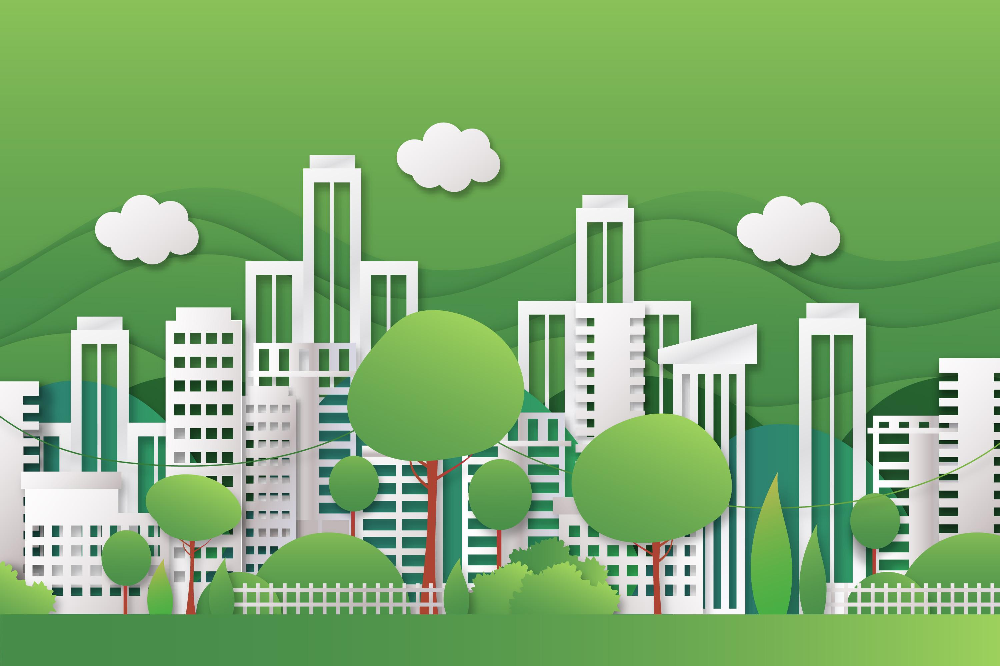
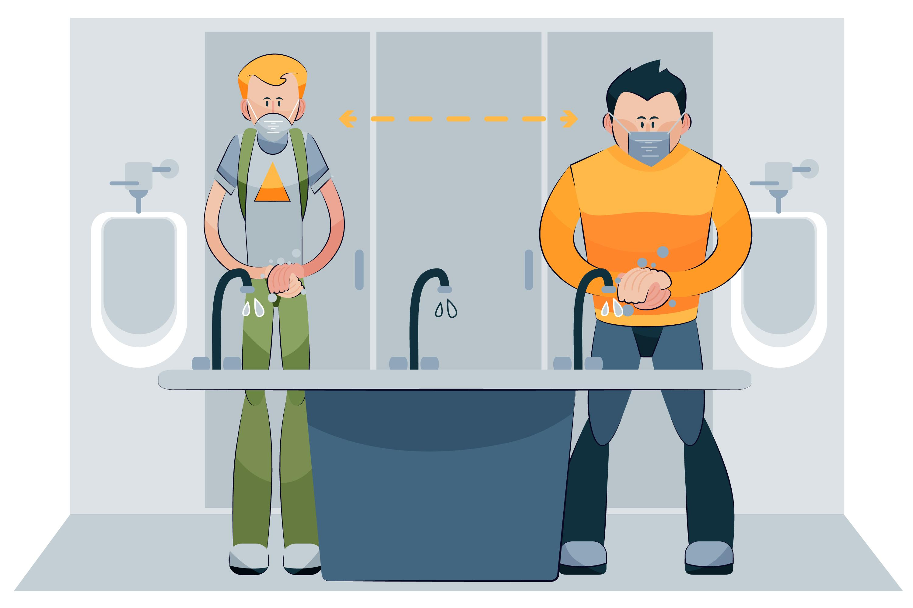

SmartMaharagama
`Technology. Community. Progress`
INTRODUCTION
Maharagama is a rapidly growing suburban town located about 16 kilometers southeast of Colombo in Sri Lanka’s Western Province. Known for its strategic location and excellent connectivity, Maharagama serves as a key commercial and residential hub in the Colombo District. The town is well-connected by frequent bus routes and a railway line, making it easily accessible from Colombo and surrounding areas. Over recent years, Maharagama has developed into an important center for education and healthcare, hosting several institutions and facilities that cater to the needs of the local population. Its bustling markets and busy streets reflect the dynamic lifestyle of its residents, blending modern urban conveniences with traditional Sri Lankan culture. Maharagama’s role as a transport and commercial junction has contributed to its steady urban growth, positioning it as a vital suburb within the greater Colombo metropolitan area.
.jpg)
WHAT IS SMART CITY ?
A Smart City uses technology, data, and innovation to improve the quality of life for its citizens. It integrates digital solutions across urban infrastructure like transport, energy, waste, water, and public safety to make city life more efficient, sustainable, and inclusive. By leveraging sensors, connectivity, and intelligent systems, Smart Cities aim to reduce congestion, save energy, enhance citizen engagement, and create greener and more responsive environments.
OUR VISION
Our vision is to transform Maharagama into a cleaner, greener, and digitally connected city where innovation meets daily life.
- Eco-friendly infrastructure
- Smart traffic management
- Better waste solutions
- Citizen engagement through technology
WHY SMART MAHARAGAMA ?
SmartMaharagama is a forward-looking initiative aimed at transforming Maharagama into a smarter, greener, and more connected urban space. Maharagama, a rapidly growing suburb in Sri Lanka, faces challenges like traffic congestion, improper waste management, limited green spaces, and high energy consumption. Our project identifies these core issues and introduces innovative solutions using smart city principles tailored specifically to the local context.
This platform acts as a community hub where residents can:
- Learn about the issues inside the area.
- Explore practical tools and urban solutions
- Participate in local environmental and tech-driven events
- Share feedback and propose their own ideas
Whether it's implementing smart traffic lights, digital waste bins, or promoting urban greening and sustainable living, SmartMaharagama is a collaborative step toward building a better urban future one where technology and community work hand in hand.
URBAN ISSUES IN MAHARAGAMA
As Maharagama grows rapidly, it faces several urban challenges that impact the quality of life. Here are the key issues identified in the town.
#TRAFFIC

Maharagama faces a significant traffic problem, especially during peak hours in the morning and evening. The town’s strategic location along key bus routes and its proximity to Colombo make it a major transit hub, attracting a large number of daily commuters. Adding to this, Maharagama is home to many schools, tuition centers, and shopping areas, which further increase traffic congestion throughout the day. Narrow roads, frequent pedestrian crossings, and poorly synchronized traffic lights worsen the situation. As a result, residents experience long delays, increased fuel consumption, noise pollution, and heightened stress levels. The lack of efficient traffic management and alternative routes has made this issue a major concern for daily life in the area.
#WASTE MANAGEMENT

Maharagama is a densely populated urban town, and with its rapid development, waste management has become a growing challenge. Although the local Urban Council is responsible for garbage collection, the system is often inconsistent and insufficient to meet the area's needs. Residents sometimes dispose of their waste irresponsibly, leaving garbage bags and food waste in open areas or by the roadside. This is particularly common near the market area, where vendors often pile garbage on the roadside, waiting for the garbage tractor to collect it. Unfortunately, this leads to unpleasant odors, clogged drains, and the frequent presence of stray animals such as dogs and crows, which scatter the waste further. During rainy days, the uncollected garbage mixes with stormwater, worsening environmental pollution and public health risks. A more organized, timely, and technology driven waste management system is urgently needed to maintain cleanliness and improve the quality of life in Maharagama.
#LACK OF GREEN

Maharagama faces a noticeable lack of green spaces, which affects the quality of life for its residents. With rapid urban development, many trees and small parks have been replaced by buildings and roads. This reduction in greenery leads to hotter temperatures, poorer air quality, and fewer places for people to relax and enjoy nature. Without enough trees and plants, the town also loses natural beauty and the benefits that green areas bring, such as cleaner air and a healthier environment
#ENERGY WASTE
In Maharagama, power wastage goes beyond just leaving street lights on during the day or running air conditioners continuously in shops and offices. Many households and small businesses still rely on old, energy wasting appliances like refrigerators, fans, and lights that consume far more electricity than newer models. Public buildings such as schools, government offices, and community centers frequently lack automated lighting and cooling systems, meaning lights and fans run even when rooms are empty. Sometimes, people leave devices plugged in when not in use, unknowingly drawing power through standby modes.
#FACILITIES

Maharagama is a popular destination, especially known for its clothing stores, attracting a large number of visitors from surrounding areas every day. As a result, the town experiences a constant flow of people coming and going, creating a need for better public infrastructure. One of the most pressing issues is the lack of clean and accessible public toilet facilities. Visitors, especially families and the elderly, often face difficulties due to the limited number of hygienic restrooms.
Additionally, the availability of safe drinking water is insufficient. There are very few water dispensers or public fountains, making it hard for people to stay hydrated while shopping or waiting for transportation. Proper rest areas with seating and shade are also lacking, which would greatly benefit pedestrians, the elderly, and those who spend long hours in town.
Moreover, the bus stands in Maharagama are often overcrowded, poorly maintained, and lack clear signage or digital schedules. Improving these facilities with proper shelters, organized platforms, and real-time information would enhance the commuting experience and reduce chaos during peak hours. Upgrading these basic but essential services is critical to supporting the town’s growing population and reputation as a commercial hub
#SMART SOLUTIONS FOR MAHARAGAMA
*SOLUTION FOR HEAVY TRAFFIC
- Use smart traffic lights.
- Maintain trafic light system regularly.
- Build parking areas outside town where people can leave their cars and take buses into town.
- Increase the frequency and reliability of buses.
- Use phone apps and signs to tell drivers about traffic and suggest better routes.
- Make main roads wider and stop cars from parking on the streets.
- Build bridges for people to cross busy roads safely without stopping cars.
- Make safe bike paths and sidewalks to encourage people to walk or ride bikes.
*SOLUTION FOR WASTE MANAGEMENT
- Ensure regular and timely garbage collection across all areas.
- Provide separate bins for biodegradable and non biodegradable waste.
- Educate the public on how to separate household waste (e.g., food, plastic, paper).
- Make it mandatory for homes and businesses to separate waste before disposal.
- Install clear signs and color coded bins in public areas.
- Set up recycling centers in accessible locations.
- Offer rewards or discounts for recycling efforts (e.g., bottle return programs).
- Promote the reuse of items like bags, containers, and old electronics.
- Introduce strict rules and fines for illegal dumping or burning waste.
- Educate schoolchildren and the public through workshops and posters.
- Encourage households and schools to compost food and garden waste.
*SOLUTION FOR LACK OF GREEN
- Develop small parks and green zones in available empty land areas.
- Include walking paths, benches, and play areas for families.
- Launch regular tree planting campaigns involving schools and local groups.
- Plant shade trees along streets, pavements, and near bus stops.
- Promote rooftop gardening on homes, offices, and apartment buildings.
- Make rules to protect existing parks and large trees from removal.
- Make it mandatory for new buildings to include green areas.
- Include parks and open spaces in urban planning and construction.
- Teach residents how to garden using eco friendly methods.
*SOLUTION FOR ENERGY WASTE
- Install smart lighting systems that adjust brightness based on daylight.
- Promote use of energy efficient appliances like LED bulbs, inverter ACs, and energy-saving refrigerators.
- Encourage rooftop solar panel installations on government buildings, schools, and commercial centers.
- Upgrade and maintain electrical infrastructure regularly to minimize energy losses and leakages.
- Implement timers and sensors in public lighting and commercial spaces to avoid unnecessary operation.
- Encourage businesses and households to adopt energy management practices and periodic energy audits.
- Replace old, inefficient appliances with modern, energy saving alternatives through incentive programs.
*SOLUTION FOR PUBLIC FACILITIES
- Construct modern public toilets in busy areas like shopping streets and bus stands.
- Install clean water dispensers in public areas, markets, and transport hubs.
- Place water bottle refill stations.
- Set up shaded seating areas along shopping streets, parks, and near transport points.
- Add benches and rest stops especially for elderly people, pregnant women, and children.
- Design bus stands with proper shelters, seating, and organized platforms.
- Install clear signs and digital boards showing bus routes and arrival times.
- Build wheelchair-friendly pathways.
- Add signs in multiple languages and use icons for easier navigation.
- Make sure restrooms and seating are accessible to people with disabilities.
- Develop a mobile app or screens to provide real-time updates on bus arrivals.
- Ensure regular maintenance
#COMMUNITY_EVENTS
TOWN CLEANING
Date: July 02, 2025
Location: Maharagama Town
Join us for a community cleaning event to keep Maharagama beautiful and green. Volunteers needed to collect trash and raise awareness about waste management.
PEOPLE AWARENESS MEETING
Date: July 20, 2025
Location: Maharagama Youth Center
A meeting to discuss public health awareness, energy saving tips, and how everyone can contribute to a cleaner and safer town.
TREE DISTRIBUTING EVENT
Date: June 22, 2025
Location: Maharagama Urban Council
Come and collect free saplings to plant at your homes and neighborhoods, helping Maharagama become greener and healthier for all residents.